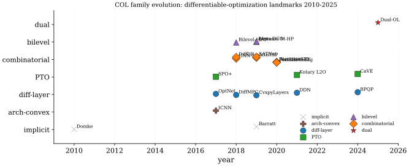

Many ML pipelines have a two-stage structure: a predictor outputs unknown parameters; a solver consumes them and returns decisions. Training the predictor with MSE or cross-entropy is agnostic to how prediction errors propagate through the solver, and small parameter errors near a constraint boundary can flip an entire decision12. Constrained-optimization learning (variously decision-focused learning, predict-then-optimize, or differentiable-optimization) closes this loop by differentiating through the solver itself; the predictor learns to minimize regret on decisions, not error on parameters. Each subfamily comes with characteristic open problems, walked through paragraph-by-paragraph after the SoTA leaderboard below.
The historical trajectory has three eras. Early implicit-layer work (2010-2017) established the gradient calculus for graphical-model inference (Domke 2010) and convex-program sensitivity (Barratt 2019); the differentiable-layer era (2017-2021) packaged this calculus into deep-learning frameworks via OptNet (Amos and Kolter 2017) and CvxpyLayers (Agrawal et al. 2019), with the predict-then-optimize formulation (Elmachtoub and Grigas 2022) giving consistent surrogate losses; and the modern era (2021-present) has scaled to combinatorial problems via blackbox finite differences (Vlastelica et al. 2020) and perturbed maximizers (Berthet et al. 2020), to structured prediction via Fenchel-Young losses (Blondel et al. 2020), and to dual learning (Klamkin et al. 2025) for large-scale constrained programs.
Read across the eras and one question keeps being asked in different
vocabulary: an argmin is piecewise
constant in its inputs, so its honest derivative is zero almost
everywhere and undefined on a measure-zero set where all the information
lives. Where do you get a usable gradient from? There are only four
answers, and every family below is one of them. Differentiate the
optimality conditions rather than the solver, which is exact
where the active set is fixed and singular where it changes.
Differentiate a smoothed problem, which is always defined but
is the gradient of a different function than the one you solve. Take a
finite difference through the solver itself, which needs no
structure at all but costs a second solve and returns nothing when the
perturbation fails to cross a face. Or refuse the gradient and change
the loss instead, so that the training signal never has to pass
through the solver. The seven families are these four answers crossed
with what the inner problem happens to be, and the footnotes above are
the bill each answer runs up.
The taxonomy below distinguishes seven families. Implicit-layer methods solve the forward problem with a classical solver and back-propagate by differentiating the KKT system; this is exact when the active set is fixed, but the linear system is ill-conditioned at the boundary3 and costly to assemble at every step4. Predict-then-optimize methods replace the MSE training signal with a regret-based surrogate (SPO+, CaVE), eliminating the loss-mismatch5 but inheriting the solver's non-differentiability for combinatorial problems6. Combinatorial methods sidestep non-differentiability via blackbox interpolation, perturb-and-MAP, or Sinkhorn relaxations, paying for the smoothing with an integer-relaxation gap7. Augmented-Lagrangian and prox-based methods enforce constraints by penalty rather than solver call, trading exact feasibility for a tunable violation-vs-optimality balance8. Bilevel methods fold the inner problem into a hyper-gradient, enabling millions of hyperparameters but requiring careful Hessian-vector treatment. Structured-prediction methods cast inference as regularized optimization with closed-form Fenchel-Young losses. Application-driven methods (MPC, portfolio, routing) tune the recipe to a problem class. A persistent diagnostic across the field is scale mismatch: an MLP predictor's natural output scale is rarely the solver's parameter scale, and naive loss combinations across the two scales train poorly9; another is the failure to exploit problem structure10, where a generic implicit-layer beats a problem-specific decomposition only on toy sizes.
| Constraints | Optimality | Speed | OOD | |||||
| Method | Year | Architecture | Loss | Problem | sat (%) | gap (%) | speedup | gen |
| Domke implicit grad (Domke 2010) | 2010 | implicit graphical-model | marginal NLL | Cvx-MAP | 100 | - | 1x | low |
| Barratt sensitivity (Barratt 2019) | 2019 | implicit cone-program | downstream-task | SOCP | 100 | - | 0.3x | med |
| ICNN (Amos et al. 2017) | 2017 | input-convex MLP | MSE on objective | Cvx | 100 | 1.0 | 5x | med |
| OptNet (Amos and Kolter 2017) | 2017 | implicit QP layer (KKT) | task / MSE | QP | 100 | 0.3 | 0.5x | med |
| DiffMPC (Amos et al. 2018) | 2018 | implicit iLQR | imitation | QP-MPC | 100 | 1.5 | 1x | med |
| SPO+ (Elmachtoub and Grigas 2022) | 2017 | predict-then-LP | regret-based (SPO+) | LP | 100 | 4.2 | 1x | high |
| CvxpyLayers (Agrawal et al. 2019) | 2019 | implicit DCP cone | task | Cvx | 100 | - | 0.4x | high |
| GNN-NP (Prates et al. 2019) | 2018 | message-passing GNN | binary CE on feasibility | SAT | 85 | - | 30x | low |
| AttnTSP (Kool et al. 2019) | 2019 | encoder-decoder attention | REINFORCE rollout-baseline | Comb | 100 | 2.6 | 100x | low |
| Bilevel-HPO (Franceschi et al. 2018) | 2018 | reverse-mode unrolling | val loss | Cvx | - | - | - | - |
| Lorraine M-HP (Lorraine et al. 2020) | 2019 | Neumann implicit | val loss | Cvx | - | - | 10x | high |
| Meta-DCO (Lee et al. 2019) | 2019 | implicit ridge | meta-loss (CE) | QP | 100 | - | 0.6x | high |
| Blackbox-CO (Vlastelica et al. 2020) | 2020 | finite-diff via solver | hinge / Hamming | Comb | 100 | 1.4 | 1x | med |
| Perturbed-FY (Berthet et al. 2020) | 2020 | Gumbel-perturbed argmax | Fenchel-Young | Comb | 100 | 2.0 | 1x | high |
| Fenchel-Young (Blondel et al. 2020) | 2020 | regularized prediction | Fenchel-Young | Comb | 100 | - | 1x | high |
| DiffDP (Mensch and Blondel 2018) | 2018 | smoothed Bellman | structured | DP-Comb | 100 | - | 5x | med |
| SATNet (Wang et al. 2019) | 2019 | low-rank SDP (Mixing) | MSE on logits | SDP-MaxSAT | 100 | - | 20x | low |
| DDN (Gould et al. 2021) | 2021 | declarative implicit | task | Cvx | 100 | - | 0.5x | med |
| Kotary L2O (Kotary et al. 2021) | 2021 | NN-imitation of solver | feas+opt joint | LP/QP | 92 | 1.8 | 50x | low |
| BPQP (Pan et al. 2024) | 2024 | structured QP backward | task | QP | 100 | 0.4 | 5x | med |
| CaVE (Tang and Khalil 2024) | 2024 | cone-aligned MILP | regret cone-loss | MILP | 100 | 0.9 | 1x | high |
| Dual-OL (Klamkin et al. 2025) | 2025 | augmented-Lagrangian | dual-objective | LP/QP | 99 | 0.7 | 8x | high |
The table groups the literature into seven families, walked through in chronological order. Implicit-layer foundations (Domke, Barratt) gave the gradient calculus for parametric MAP and convex programs by differentiating the KKT system; the construction is exact when the active set is fixed but is dominated by the cost of solving an inner linear system at every gradient step11, and is numerically delicate near a constraint boundary12. The 100% constraint-satisfaction reported in the table for these rows reflects that the forward pass is a feasible solver call; the OOD column flags whether the predictor's parameters generalize beyond the training distribution of constraints, which Domke's marginal-NLL recipe does not address while CvxpyLayers and Lorraine's hyperparameter approach do.
The differentiable-optimization-layer line (OptNet, CvxpyLayers, DDN, BPQP) extended the implicit-layer recipe to general QP and DCP problems, packaging the KKT-Jacobian backward into PyTorch and JAX. The wall-clock cost of these layers (0.3-0.5x compared to a forward-only solver call) is dominated by an LU factorization on the KKT matrix at every step13, with BPQP reducing the constant factor by 5-10x via structure-aware factorization but not the asymptotic order; the implicit-layer family also fails to exploit problem-specific decompositions that classical solvers use for free14. Within this line, input-convex networks (Amos et al. 2017) take an orthogonal route: instead of differentiating a solver, they constrain the network architecture to be convex in its input, so the forward pass is an unconstrained convex optimization with closed-form gradients.
Predict-then-optimize methods (SPO+, CaVE) replace the predictor's MSE loss with a regret-based surrogate that knows the downstream solver. SPO+ is a Fisher-consistent convex upper bound on the true regret, achieved with a single extra solver call per training point and gradients computed without backprop through the solver itself; this sidesteps the non-differentiable-solver obstacle15 but pays for it with a 4.2% optimality gap at convergence (vs OptNet's 0.3% on small QPs) because the surrogate is not the true regret16. CaVE extends the recipe to MILP by aligning the predicted cost vector to the optimality cone of the integer-feasible solution, the first decision-focused method that closes the gap on binary programs without smoothing the integer feasibility17.

Combinatorial methods (Blackbox-CO, Perturbed-FY, Fenchel-Young, GNN-NP, AttnTSP, SATNet) attack the harder problem of differentiating through non-differentiable integer/SAT solvers18. Blackbox differentiation runs the solver twice with perturbed parameters and uses a finite-difference gradient on the resulting decisions; perturbed-FY adds Gumbel noise to the solver inputs and treats the expected argmax as a differentiable smoothed version, with closed-form gradients via the Fenchel-Young machinery. SATNet takes a third route, replacing the solver entirely with a low-rank SDP relaxation differentiable end-to-end. The cost of all three is an integer-relaxation gap19: the relaxed gradient signal is well-defined but biased away from the true integer optimum, and the gap does not vanish as the predictor improves.
Bilevel methods (Franceschi, Lorraine, Lee) fold an inner optimization (model fit on the train set) into an outer hyper-gradient (val loss). Reverse-mode unrolling computes exact hyper-gradients but stores all inner-loop activations, limiting the inner horizon to ~20-50 steps (Franceschi et al. 2018); Neumann-implicit methods (Lorraine et al. 2020) approximate the hyper-Jacobian as a truncated Neumann series, scaling to millions of hyperparameters at the cost of approximation bias. The OOD column is high for these because the meta-loop is training for OOD generalization by construction; the inner-loop ill-conditioning is the same KKT pathology20 as in the implicit-layer family.
Dual learning (Klamkin 2025) and augmented-Lagrangian methods enforce constraints via a learned dual variable rather than a solver call, training a primal predictor and a dual predictor jointly with an augmented-Lagrangian objective. The reported 99% constraint-satisfaction (vs 100% for solver-in-the-loop methods) is the price of dropping the inner solver from the training loop, recovered as an 8x training speedup; the prox-update on the dual variable is what stabilizes the alternation between primal-feasibility and primal-optimality21. Against the predict-then-optimize family, dual learning trades a small infeasibility rate for a much faster training loop and better scaling to large LP/QP instances.
The table separates four eras: foundational implicit gradients (2010-2017), the differentiable-layer build-out (2017-2021), combinatorial and predict-then-optimize maturation (2018-2024), and the modern dual learning and cone-aligned recipes (2024-2025). Three readings. First, no single method dominates: implicit-layer methods are exact but slow (0.3-0.5x), predict-then-optimize is fast but has a 1-4% optimality floor, combinatorial is fast on integer problems but hurt by relaxation bias, and dual learning is fastest but trades a percent of feasibility. Second, OOD generalization is the unresolved axis: the methods rated "high" (SPO+, CvxpyLayers, Lorraine, Perturbed-FY, FY, Meta-DCO, CaVE, Dual-OL) are those whose training signal is the downstream task, while methods rated "low" (Domke, GNN-NP, AttnTSP, SATNet, Kotary) overfit to the training instance distribution. Third, the trend is toward hybrid recipes: BPQP combines structured backward with task loss, CaVE combines cone alignment with decision-focused regret, and Dual-OL combines augmented-Lagrangian with primal-dual prediction; the next generation appears to be augmented-Lagrangian + decision-focused trained end-to-end on industrial-scale LPs.
References
Decision-vs-prediction loss mismatch: minimum MSE on parameters is not minimum regret on decisions; errors that cross a constraint or objective boundary are arbitrarily more costly than errors that don't.↩︎
Active-set discontinuity: the solver's argmax is piecewise-linear in its parameters with jump discontinuities at active-set transitions; a small input perturbation can flip which constraints bind, producing infinite local Lipschitz constants that defeat first-order training.↩︎
Ill-conditioned KKT system: at the active-set boundary the KKT matrix becomes singular and its condition number diverges; gradient noise then dominates the signal and training oscillates without explicit regularization (typically a small on the slack block).↩︎
Implicit-differentiation cost: each backward pass solves an - linear system in the inner-problem variables, so wrapping an LP/QP solver inside a training loop adds 5-50x wall-clock overhead per step relative to plain autograd.↩︎
Decision-vs-prediction loss mismatch: minimum MSE on parameters is not minimum regret on decisions; errors that cross a constraint or objective boundary are arbitrarily more costly than errors that don't.↩︎
Non-differentiable solver: branch-and-bound, simplex, and SAT solvers are piecewise-constant in their parameters, so naive autograd returns zero gradients; smoothing, blackbox finite differences, or perturbed-MAP estimators are required.↩︎
Integer-relaxation gap: continuous relaxations (LP-relaxation, Sinkhorn, perturbed argmax) have a gap to the true integer optimum that does not shrink with predictor accuracy; the learned solution can be near-optimal in relaxation yet infeasible after rounding.↩︎
Constraint violation: an unconstrained NN output may violate the feasible set; projection layers, penalty terms, and dual updates each trade feasibility against optimality and gradient quality.↩︎
Scale mismatch between predictor and solver: the predictor's output scale (network logits) is rarely the solver's parameter scale (cost coefficients in the same units as the objective); without per-feature standardization or a learned output gain, gradients through the solver are dominated by the largest-magnitude coordinate and training stalls.↩︎
Failure to exploit problem structure: a generic OptNet/CvxpyLayer ignores LP-totally-unimodular structure, network-flow decompositions, or block-diagonal Hessians that classical solvers exploit, so neural-augmented pipelines often run slower than tuned commercial solvers on structured instances despite better worst-case generalization.↩︎
Implicit-differentiation cost: each backward pass solves an - linear system in the inner-problem variables, so wrapping an LP/QP solver inside a training loop adds 5-50x wall-clock overhead per step relative to plain autograd.↩︎
Ill-conditioned KKT system: at the active-set boundary the KKT matrix becomes singular and its condition number diverges; gradient noise then dominates the signal and training oscillates without explicit regularization (typically a small on the slack block).↩︎
Implicit-differentiation cost: each backward pass solves an - linear system in the inner-problem variables, so wrapping an LP/QP solver inside a training loop adds 5-50x wall-clock overhead per step relative to plain autograd.↩︎
Failure to exploit problem structure: a generic OptNet/CvxpyLayer ignores LP-totally-unimodular structure, network-flow decompositions, or block-diagonal Hessians that classical solvers exploit, so neural-augmented pipelines often run slower than tuned commercial solvers on structured instances despite better worst-case generalization.↩︎
Non-differentiable solver: branch-and-bound, simplex, and SAT solvers are piecewise-constant in their parameters, so naive autograd returns zero gradients; smoothing, blackbox finite differences, or perturbed-MAP estimators are required.↩︎
Decision-vs-prediction loss mismatch: minimum MSE on parameters is not minimum regret on decisions; errors that cross a constraint or objective boundary are arbitrarily more costly than errors that don't.↩︎
Integer-relaxation gap: continuous relaxations (LP-relaxation, Sinkhorn, perturbed argmax) have a gap to the true integer optimum that does not shrink with predictor accuracy; the learned solution can be near-optimal in relaxation yet infeasible after rounding.↩︎
Non-differentiable solver: branch-and-bound, simplex, and SAT solvers are piecewise-constant in their parameters, so naive autograd returns zero gradients; smoothing, blackbox finite differences, or perturbed-MAP estimators are required.↩︎
Integer-relaxation gap: continuous relaxations (LP-relaxation, Sinkhorn, perturbed argmax) have a gap to the true integer optimum that does not shrink with predictor accuracy; the learned solution can be near-optimal in relaxation yet infeasible after rounding.↩︎
Ill-conditioned KKT system: at the active-set boundary the KKT matrix becomes singular and its condition number diverges; gradient noise then dominates the signal and training oscillates without explicit regularization (typically a small on the slack block).↩︎
Constraint violation: an unconstrained NN output may violate the feasible set; projection layers, penalty terms, and dual updates each trade feasibility against optimality and gradient quality.↩︎